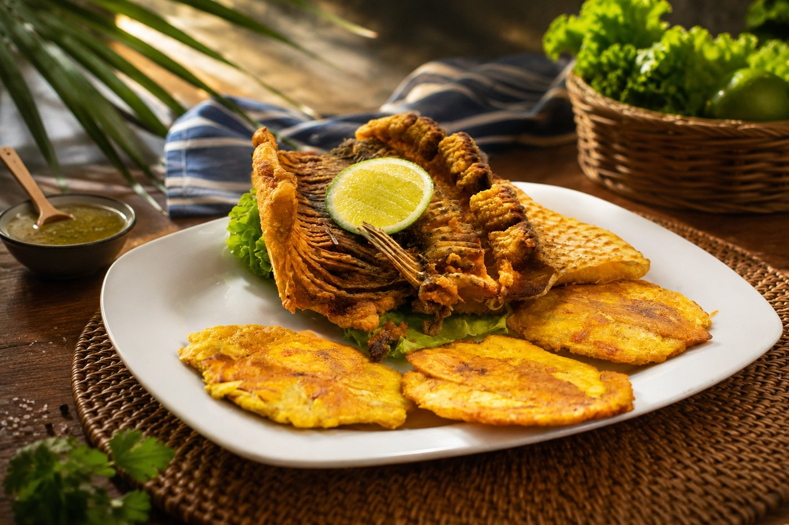
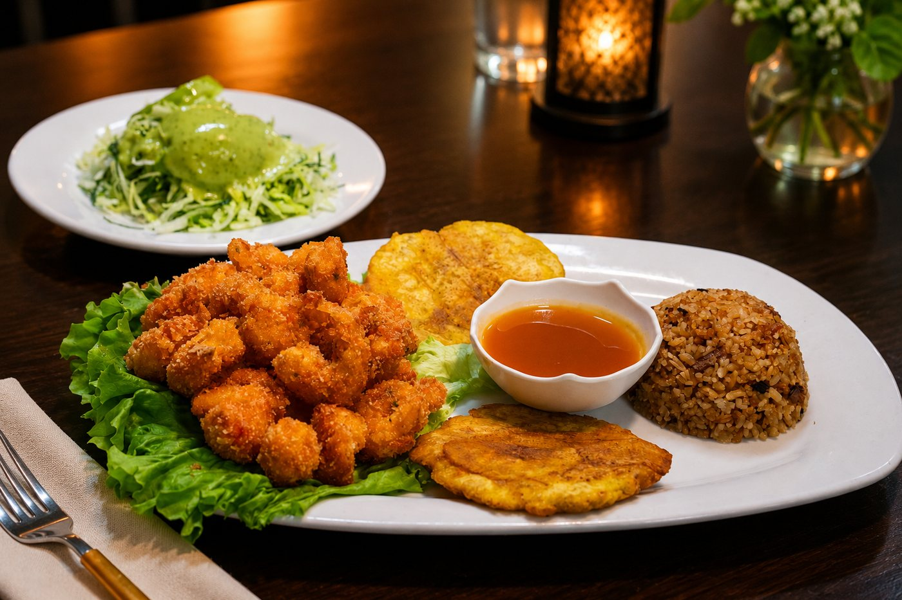
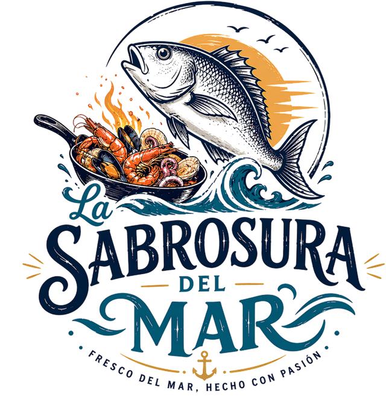

Camarones apanados
Camarones crocantes por fuera y jugosos por dentro, acompañados con patacón, arroz y ensalada de la casa.
$42.000

Pescado fresco, vegetales frescos, ingredientes de calidad, porciones generosas y el verdadero sabor de la Costa colombiana.
En La Sabrosura del Mar encuentras una carta llena de sabores: pescados, cazuelas, ceviches, arroces marineros, camarones, langostinos, pastas y especialidades de la casa.
Cada plato combina ingredientes de calidad, pescado fresco y el toque costeño de Candelaria para ofrecerte una experiencia auténtica, abundante y llena de sabor.

Una selección de los platos que han convertido a La Sabrosura del Mar en uno de los restaurantes de comida de mar preferidos de Armenia.
Camarones crocantes por fuera y jugosos por dentro, acompañados con patacón, arroz y ensalada de la casa.
Pescado fresco, frito hasta alcanzar el punto perfecto. Acompañado con caldo, arroz, patacón y ensalada.
Preparación cremosa y abundante con una deliciosa combinación de mariscos. Acompañada con arroz y patacón.
Camarones preparados con el sabor fresco y característico de la casa.
Mariscos en salsa acompañados con arroz, caldo, patacón, ensalada y una porción de pescado.
Pescado apanado, crocante por fuera y jugoso por dentro. Acompañado con caldo, arroz, patacón y ensalada.
Trucha preparada a la plancha y acompañada con arroz, patacón y ensalada.
Pescado en salsa con plátano, yuca y papa, acompañado con caldo, arroz, patacón y ensalada.
Pasta con mariscos en la salsa especial de la casa, acompañada con patacón.
Seleccionamos ingredientes de calidad para que disfrutes el mejor sabor en cada preparación.
Nuestra cocina lleva el toque especial de Candelaria y la tradición gastronómica de la Costa colombiana.
Platos abundantes, completos y preparados para que salgas verdaderamente satisfecho.
Visítanos en el Centro o conoce nuestra nueva sede Norte, más amplia y con parqueadero.

La Sabrosura del Mar nació en 2018 de la mano de Candelaria, una mujer costeña, emprendedora y carismática que llevó a Armenia los sabores tradicionales de su tierra.
Lo que comenzó como un pequeño restaurante fue conquistando a sus clientes gracias a su sazón, sus porciones generosas y la calidad de sus ingredientes.
Con la llegada de su esposo Juan Carlos, el negocio continuó creciendo y consolidándose como referente de comida de mar en el centro de Armenia.
Abrió sus puertas la sede Norte: un espacio más amplio, moderno y renovado, pero con el mismo sabor auténtico que dio origen a esta historia.
Hoy contamos con dos sedes en Armenia y conservamos lo que nos trajo hasta aquí: ingredientes de calidad, pescado fresco, vegetales frescos, porciones generosas y el auténtico sabor de la Costa colombiana.
Elige la sede más conveniente y disfruta nuestra carta de comida de mar en Armenia.
La sede donde comenzó nuestra historia. Ubicada en el corazón de Armenia y con servicio a domicilio.
Una sede nueva, amplia y moderna, creada para disfrutar en familia o con amigos. Cuenta con parqueadero para mayor comodidad.
Disfruta auténtica comida de mar sin salir de Armenia.
Consulta nuestra carta, elige la sede más cercana o comunícate con nosotros.
Todos los días, incluidos festivos
11:00 a. m. – 5:00 p. m.No manejamos reservas. La atención se realiza directamente en nuestras dos sedes, por orden de llegada.